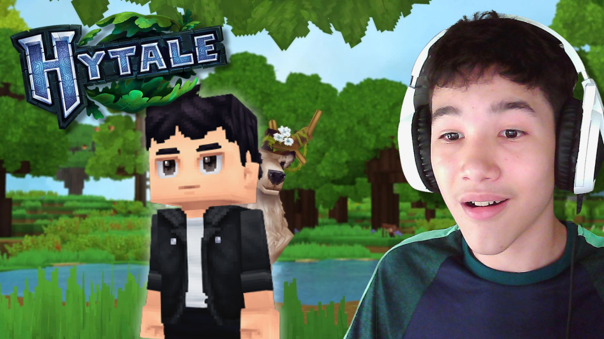

Desenvolvimento
- HTML
- CSS
- JavaScript
- Responsividade
- Git e GitHub
Portfólio Pessoal
Criei interfaces modernas e responsivas com foco em usabilidade e design limpo.
Sou estudante do ensino médio com interesse em Jornalismo e comunicação. Trabalho com atendimento ao público na empresa da minha família, Casa Trigo Zero, onde desenvolvi habilidades de comunicação, vendas e relacionamento com clientes. Também atuo com edição de vídeos e imagens para redes sociais como Instagram e YouTube. Estudo desenvolvimento front-end com HTML, CSS e JavaScript, criando interfaces limpas, responsivas e funcionais. Estou sempre buscando evoluir, aprender novas tecnologias e melhorar minhas habilidades criativas e técnicas.
Me encontre nas plataformas onde compartilho projetos, lives e conteúdo.

Landing page moderna para empresa alimentícia com foco em produtos sem glúten.
Ver Projeto

Quer trocar uma ideia sobre projetos, conteúdo digital e tecnologia? Me chama nas plataformas abaixo.
Ir Para Meus Links